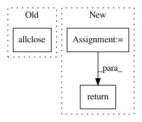

aba65f959fb114e67103a061e92ab5596c557d3d,geomstats/lie_group.py,LieGroup,group_exp,#LieGroup#Any#Any#Any#,90
Before Change
base_point = identity
base_point = self.regularize(base_point, point_type=point_type)
if gs.allclose(base_point, identity):
return self.group_exp_from_identity(
tangent_vec, point_type=point_type)
After Change
base_point = identity
base_point = self.regularize(base_point, point_type=point_type)
n_tangent_vecs = tangent_vec.shape[0]
n_base_points = base_point.shape[0]
assert (tangent_vec.shape == base_point.shape
or n_tangent_vecs == 1
or n_base_points == 1)
if n_tangent_vecs == 1:
tangent_vec = gs.array([tangent_vec[0]] * n_base_points)
if n_base_points == 1:
base_point = gs.array([base_point[0]] * n_tangent_vecs)
result = gs.cond(
pred=gs.allclose(base_point, identity),
true_fn=lambda: self.group_exp_from_identity(
tangent_vec, point_type=point_type),
false_fn=lambda: self.group_exp_not_from_identity(
tangent_vec, base_point, point_type))
return result
def group_log_from_identity(self, point, point_type=None):
Compute the group logarithm
In pattern: SUPERPATTERN
Frequency: 3
Non-data size: 3
Instances
Project Name: geomstats/geomstats
Commit Name: aba65f959fb114e67103a061e92ab5596c557d3d
Time: 2018-12-27
Author: ninamio78@gmail.com
File Name: geomstats/lie_group.py
Class Name: LieGroup
Method Name: group_exp
Project Name: nipy/dipy
Commit Name: 06ca8240251caf7a43850cf1ff2f6f9f58560b3d
Time: 2012-07-09
Author: Bago.Amirbekian@ucsf.edu
File Name: dipy/core/sphere.py
Class Name:
Method Name: reduce_antipodal
Project Name: geomstats/geomstats
Commit Name: 506b234094009d55d326f1ce957f53f15d4b65ee
Time: 2018-02-26
Author: ninamio78@gmail.com
File Name: geomstats/spd_matrices_space.py
Class Name:
Method Name: is_symmetric